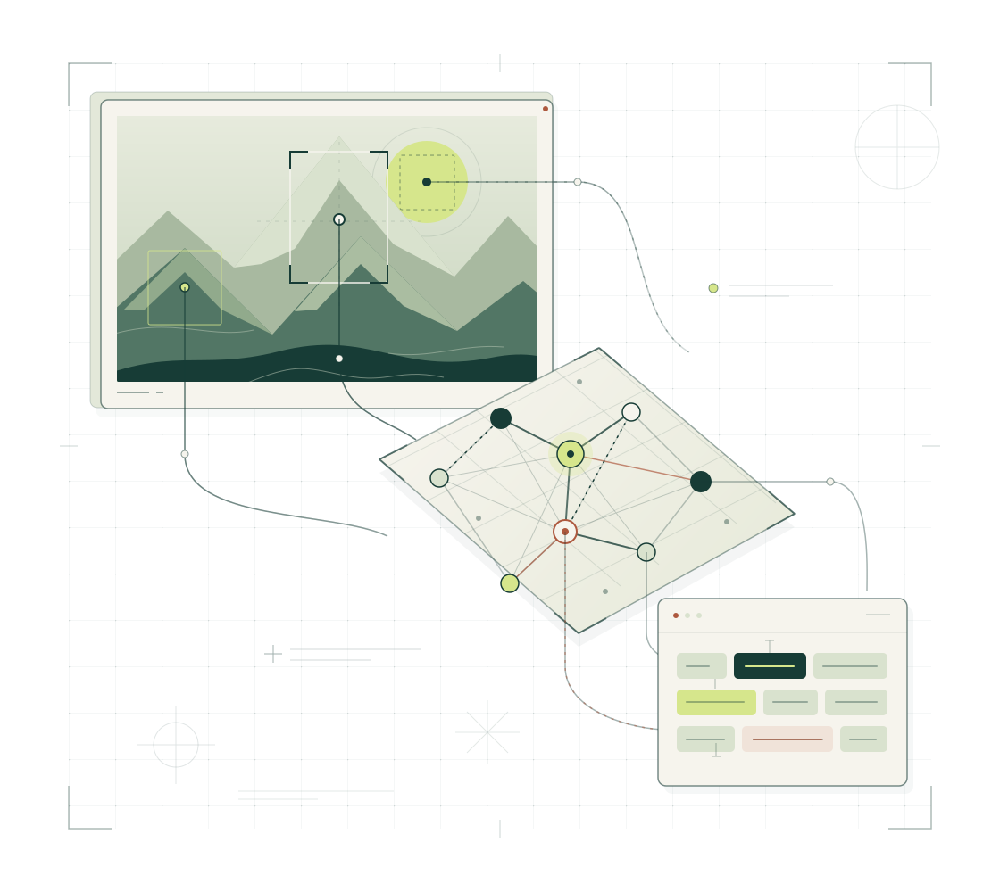
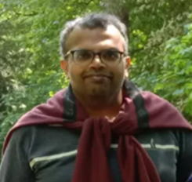
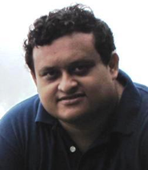
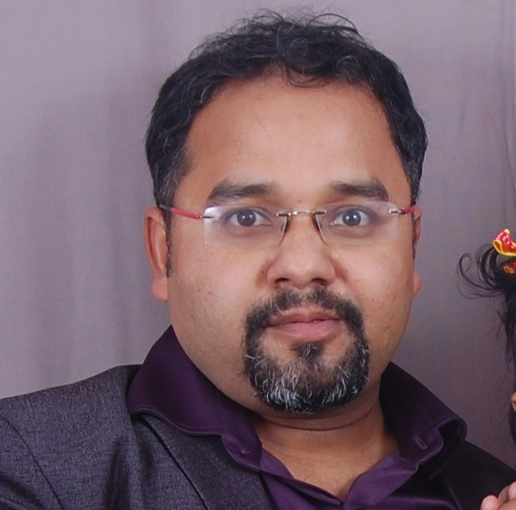

Paper Submission Deadline:
ICVGIP 2026 Workshop Proposal
First Workshop on Vision Language Models and Applications (ViLaMA 2026)

WORKSHOP DAY21 December 2026 · Monday
VENUEISI Kolkata
FORMATHalf-day workshop
SUBMISSIONSOpenReview · link to follow
THE WORKSHOP
Workshop Overview
Abstract:
Progress in multimodal foundation models has transformed visual computing from isolated perception tasks into unified systems capable of joint visual reasoning and natural language understanding. Held in conjunction with the Indian Conference on Computer Vision, Graphics, and Image Processing (ICVGIP), this workshop examines the algorithmic foundations, parameter-efficient adaptations, and practical deployments of Vision-Language Models (VLMs). Despite progress in cross-modal alignment, key challenges persist in resource-constrained fine-tuning, domain adaptation, interpretability, trustworthy visual grounding, and multilingual context understanding. This workshop bridges computer vision and natural language processing by exploring core themes, including zero-shot learning, parameter-efficient fine-tuning (PEFT), spatial reasoning, document AI, and hallucination mitigation. Complementing ICVGIP’s main tracks, this venue provides an interactive setting for the frontiers of multimodal models, preliminary breakthroughs, and regional application challenges. Through peer-reviewed oral sessions and expert keynotes, the workshop aims to help interdisciplinary collaboration and chart discussions on directions for multimodal AI research.
Motivation and Scope
The rapid transition of artificial intelligence from single-modality tasks toward multimodal reasoning motivates this Workshop on Vision-Language Models and Applications (ViLaMA), creating a dedicated forum to address how modern vision systems move beyond pixel recognition to interact through natural language. Scientifically, Vision-Language Models (VLMs) represent a pivotal shift by unifying visual perception with linguistic semantic spaces, opening breakthroughs in zero-shot generalization, spatial-temporal visual reasoning, parameter-efficient fine-tuning (PEFT), and multimodal chain-of-thought problem-solving. Hosting this workshop directly enriches the ICVGIP community, bridging classical vision expertise—such as document image analysis, 3D perception, and visual tracking—with contemporary NLP paradigms to foster cross-disciplinary research across academic and industrial Indian AI sectors. This initiative is timely due to the accelerating adoption of foundation models alongside challenges in resource-constrained fine-tuning, trustworthy visual grounding, and adapting multimodal systems to complex regional contexts like multilingual Indian documents and healthcare data. The workshop uniquely complements ICVGIP’s main archival technical sessions by offering an agile, interactive venue for presenting preliminary research breakthroughs, exploring high-impact ideas, and discussing domain-specific adaptations that exceed the scope of core conference tracks. Ultimately, the workshop expects to deliver targeted collaborative research networks across vision, speech and NLP laboratories, outline critical benchmarks for regional multimodal datasets, highlight efficient deployment strategies for local computing infrastructures, and upskill emerging researchers through expert keynotes and industry interactions.
RESEARCH THEMES
Topics of Interest
Image/Video Question Answering
Image/Video Captioning
Document Question Answering
Vision-Language Models for Healthcare
Vision-Language Models for Remote Sensing
Visual Lip Reading
Indian Vision-Language Datasets
Vision-Speech Models
Indian Vision-Speech Datasets
Egocentric Vision-Language Understanding and Reasoning
Multilingual and Low-Resource Multimodal Learning
Lightweight Vision-Language Models
Interpretable and trustworthy Vision-Language Models
Vision-Language Agents
Applications of VLMs
PLAN YOUR SUBMISSION
Important Dates
Results will be announced within
Workshop Date:
CALL FOR PAPERS
Paper Submission
The paper submissions will be handled through the OpenReview submission portal.
Each submitted paper will be reviewed by at least two and at most three reviewers. The meta-reviewers (from the TPC) will be finalizing the Accept/Reject decision based on the scores assigned by the reviewer. The scores will vary from Strong Reject (0) to Strong Accept (5). The workshop organizers will communicate the accept/reject decisions to the authors.
We are expecting more than 15 submissions, from which at least 5 papers will be accepted for presentation (at most 30% acceptance).
PUBLICATION PLAN
Publication Plan: The accepted papers will be published in ACM ICPS under the head of ICVGIP Workshops
EXTENDED VERSIONS · APPROVAL AWAITED
Also, Extended Versions of the Papers will be Published as Book Chapters (Approval Awaited from Springer)
The Tentative Technical Program Committee members are as follows:
Dr. Alexey Kravets, University of Bath
Dr. Vinod Kumar Kurmi, IISER Bhopal
Dr. Pratik Mazumder, IIT Jodhpur
Dr. Pravendra Singh, IIT Roorkee
Dr. Samik Some, IIT Kanpur
Dr. Arghya Pal, Monash University
Dr. Vinay Kumar Verma, Amazon
Dr. Aakansha Mishra, Amazon
Dr. Tanima Datta, IIT BHU
Dr. Tushar Sandhan, IIT Kanpur
THE PROGRAM
Workshop Format
A tentative schedule of the Workshop is presented in the following table.
9:00 am - 9:05 am | Introduction |
|---|---|
9:05 am - 10:00 am | Contributed Paper Presentations [9 + 2 minutes for each paper] |
10:05 am - 11:00 am | Invited Talk #1 [45 + 10 minutes] |
11:05 am - 11:15 am | Coffee Break |
11:20 am - 12:15 pm | Invited Talk #2 [45 + 10 minutes] |
12:20 pm - 01:00 pm | Industry Talk [30 + 10 minutes] |
Workshop Content
Three Invited Talks from Academia and Industry, and 5 Contributed Paper Presentations (Oral)
Placeholder · Room assignment to be announced.
ACADEMIA & INDUSTRY
Invited Speakers
Placeholder · Confirmed speakers to be announced.
Two keynote speakers from academia and one speaker from the industry will be finalized from the following tentative list of speakers.
Prof. Anoop Namboodiri (IIIT Hyderabad)
Prof. Abir Das (IIT Kharagpur)
Prof. Pawan Goyel (IIT Kharagpur)
Prof. Dipti Prasad Mukherjee (ISI Kolkata)
Dr. Sujoy Paul (Google)
Prof. Vineeth Balasubramaniam (Microsoft Research)
Dr. Brojeshwar Bhowmick (TCS Research)
THE PEOPLE BEHIND ViLaMA
Organizing Committee

Dr. Vinay P. Namboodiri
Email: vpn22@bath.ac.uk
Dr. Vinay P. Namboodiri is a faculty member in the Department of Computer Science at the University of Bath, UK. He previously worked in the Department of Computer Science and Engineering at IIT Kanpur and at Bell Labs Antwerp, and was a Postdoctoral Fellow at KU Leuven under Prof. Luc Van Gool. He received his Ph.D. from IIT Bombay under the supervision of Prof. Subhasis Chaudhuri. His research interests broadly lie in Computer Vision and Machine Learning, with particular focus on visual recognition with scarce supervision, multimodal deep learning, explainable AI, and adversarial and probabilistic deep learning. Dr. Namboodiri has led and contributed to several research projects supported by organizations including Samsung, ISRO, DRDO, DST, Hitachi and Innovate UK. His work covers areas such as Multimodal Models, Generative Models, 3D reconstruction from satellite images, language and vision, action recognition, deep learning compression, and data-efficient generative AI for video production. He has also published extensively in leading international venues in computer vision and machine learning. He has served as Area Chair/Senior Area Chair for the major conferences in computer vision and machine learning such as CVPR, ICCV, ECCV, NeurIPS, BMVC, WACV

Dr. Prithwijit Guha
Mobile: +91 9678229975
Email: pguha@iitg.ac.in
Dr. Prithwijit Guha is an Associate Professor in the Department of Electronics and Electrical Engineering at the Indian Institute of Technology (IIT) Guwahati. He earned his B.E. in Electrical Engineering from Jadavpur University in 1999, followed by an M.Tech. in Electrical Engineering (Signal Processing) and Ph.D. in Electrical Engineering (Information Systems), both from IIT Kanpur. His industrial and academic career includes serving as a Team Leader for the Computer Vision Group at TCS Innovation Labs, Research Associate at ETH Zurich's Computer Vision Lab, and Visiting Faculty positions at both IIT Kanpur and LNMIIT Jaipur. Dr. Guha's primary research interests encompass Computer Vision, Machine Learning, and Signal Processing with special focus on Broadcast and Surveillance Video Analytics, Joint Vision-Language Tasks, and Underwater Computer Vision. Over his academic career, he has authored 26 journal articles and 106 conference papers. He has served as Principal Investigator and Co-Principal Investigator of several sponsored and consultancy projects. Dr. Guha was associated with the organization of multiple IUPRAI conferences (ICVGIP, PReMI and NCVPRIPG) in various roles.

Dr. Badri Narayana Patro
Mobile: +91-9076237295
Dr. Badri Narayana Patro is a Senior Research Scientist at Microsoft Research, India, working on Transformers, Large Language Models, Agentic AI, and Generative AI for Vision, Language, and Speech. He received his Ph.D. in Electrical Engineering from IIT Kanpur, M.Tech. from IIT Bombay, and B.Tech. in Electronics and Telecommunication Engineering from NIST, Odisha. He has previously worked as a Postdoctoral Researcher at KU Leuven, Belgium, IIIT Hyderabad and Google Research India, and has also held industry positions at Samsung R&D Institute, Harman International and Larsen & Toubro EmSyS. His research interests include Computer Vision, Natural Language Processing, Machine Learning and Multimodal Learning, with particular focus on Visual Question Answering, Visual Dialog, Image Captioning, Transformers, Large Language Models and Generative AI. He has published extensively in leading international conferences and journals, including NeurIPS, CVPR, ICCV, AAAI, EMNLP, BMVC, WACV and ICASSP, and has contributed to several patent applications. He received the Best Doctoral Dissertation Award from IUPRAI at ICVGIP 2020 for his doctoral research.
NOTE: Dr. Prithwijit Guha will act as the Primary Contact on behalf of all the organizers